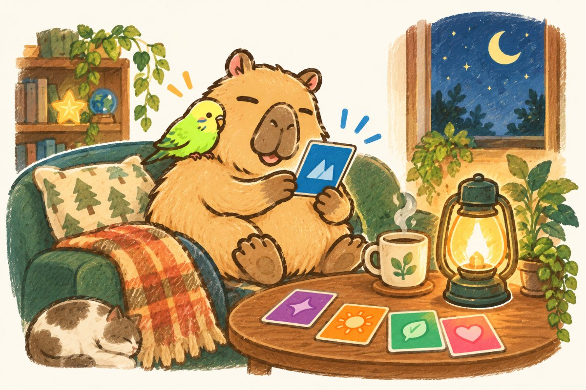
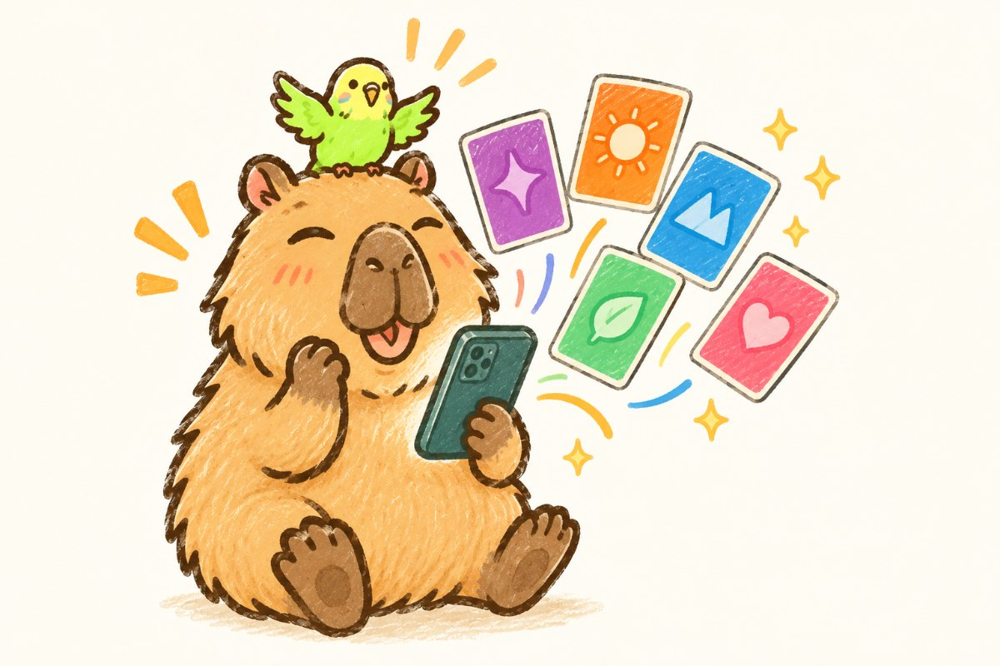

01 / READ
レポートに目を通して、引っかかったところに印をつける
全部を理解してくる必要はありません。「これ、たしかにそうかも」でも「これは違う気がする」でもかまいません。違和感のほうが、当日の材料になります。
A SMALL GUIDE FOR YOUR SESSION
読むのは5分です。準備を頑張らなくて大丈夫。ただ、ひとつだけ持ってきてほしいものがあります。それが何かを、この紙でお伝えします。

上位5つだけでも、34位まで全部でもOKです。
大きな成功でなくて大丈夫。②だけ、できれば持ってきてください。
その説明を手がかりに、60分一緒に考えます。
BEFORE WE MEET
3つあります。ぜんぶできなくても大丈夫です。②だけは、できれば持ってきてください。
01 / READ
全部を理解してくる必要はありません。「これ、たしかにそうかも」でも「これは違う気がする」でもかまいません。違和感のほうが、当日の材料になります。
02 / REMEMBER
これがいちばん効きます。当日、真ん中の段階で「この資質が、過去、あなたの成功に役立ったのはいつですか？」と必ず訊かれるからです。ここで手ぶらだと、話が「へえ、なるほど」で止まってしまいます。
大きな成功でなくていいです。むしろ小さいほうがいい。
03 / BRING
「副業の方向を決めたい」「職場の人間関係が楽になるヒントがほしい」「自分に自信を持ちたい」——なんでもかまいません。ここがずれていると、いい話をしても持って帰るものが変わってしまいます。
当日「決まってません」でも大丈夫です。その場合は、それを最初に言ってください。
補足です。まとまっていなくて大丈夫です。資料を作り込んでくる必要もありません。話しながら考える時間なので、うまく言えないまま来てください。
HOW THE 60 MINUTES GO
34個を順番に解説する時間ではありません。ギャラップ公式のワークシートも、いちばん最初にこう訊きます。
「あなたの特長的な資質（TOP5）のうち、
最も自分を説明していると思うものはどれですか？」
ここで選んだ1つを、60分かけて3つの段階で回します。10個を薄く撫でるより、1つを深く掘るほうが日常に持ち帰れる、というのが公式の考え方です。
自分の持って生まれた才能を理解する段階です。
「この資質の説明の中で、強く共感できる説明は何ですか？」
行動に表れた自分の才能を認識して、感謝する段階です。ここがいちばん時間を使います。
「この資質が、過去、あなたの成功に役立ったのはいつですか？」
才能を意識して使い、強みに育てる段階です。ここで日常に持ち帰ります。
「これからもっと意図的にこの資質を利用できる方法を2つ挙げてください。」

MORE TO KNOW
おけもんが「あなたはこういう人です」と当てにいく場ではありません。ギャラップ社のコーチング規則で、「教えるな、訊け」とはっきり決められているからです。ですので当日は、けっこう質問されます。答えを持っている必要はありません。一緒に探します。
職業名は出てきません。同じ「先生」でも、何をしている時に元気かは人によって違うからです。見るのは職業ではなく、あなたが元気になる“動作”のほうです。
優劣ではありません。公式レポートでも1〜10位は「強化する」、11〜34位は「確認する」と書き分けられています。下位は苦手という意味ではなく、意識しないと出てきにくい、というだけです。
それは、わざとそう書かれています。性格診断ではないので、性格として断定せず、自分で考えられる余白を残す設計になっています。当日はその余白を一緒に埋めにいきます。
才能そのものは基本的に変わりません。変わるのは「その才能をどう使っているか」のほうです。だから受け直すより、いまの結果を使えるようにするほうが早い、というのが公式の立場です。
わからないこと、不安なことがあれば、当日より前でもリベシティのDMでお気軽にどうぞ。「何を話せばいいか分からない」でも大丈夫です。それも含めて、当日ほどいていきましょう。